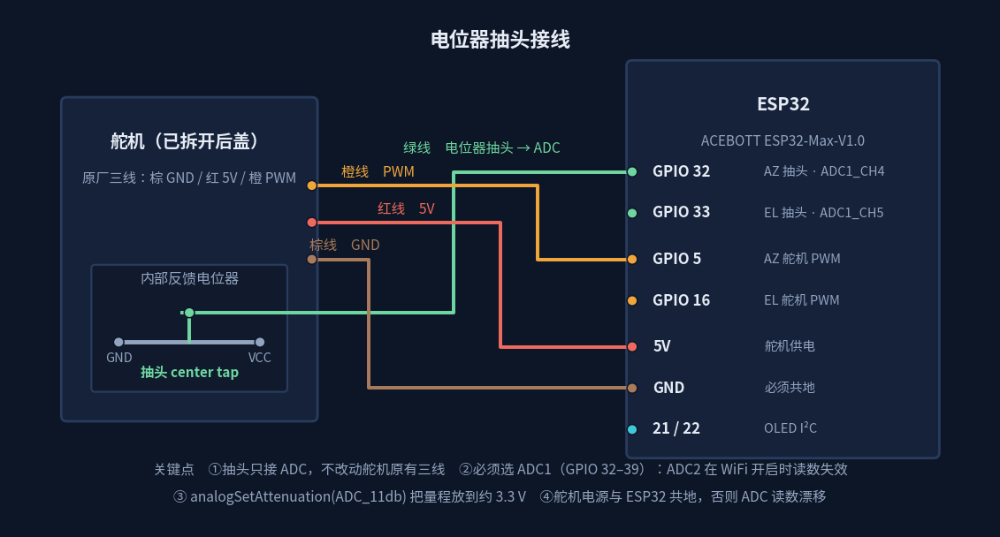
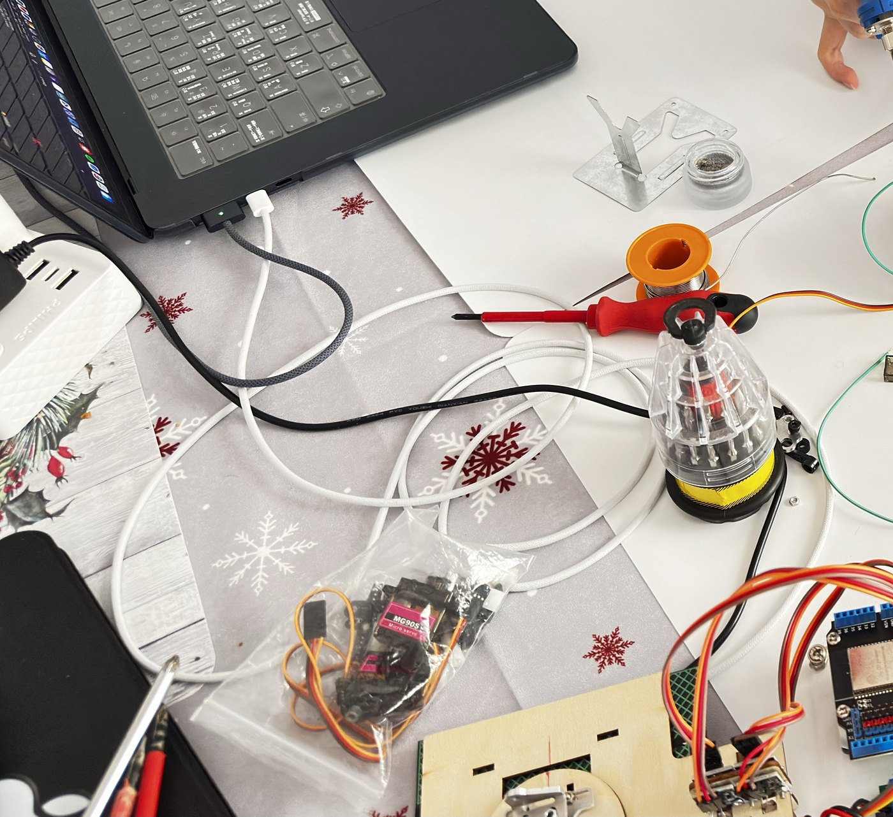
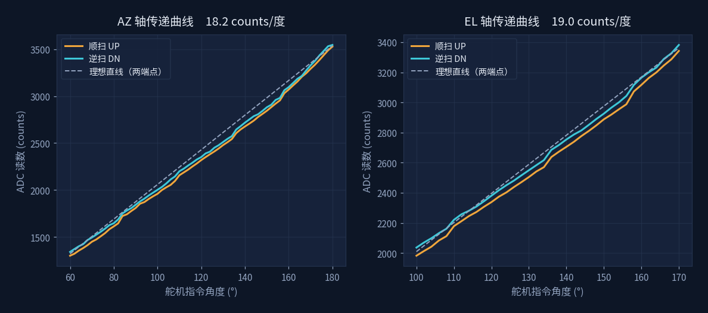
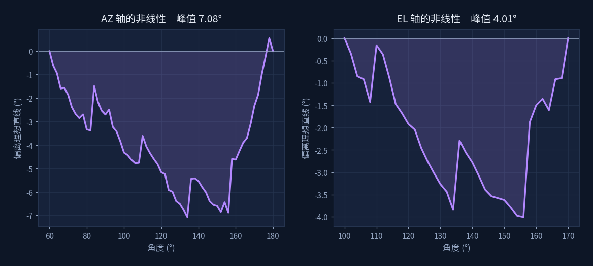
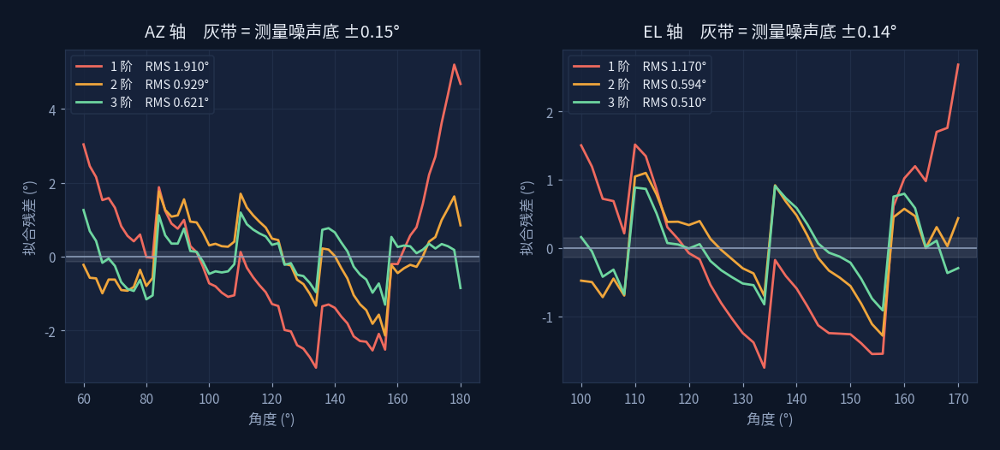
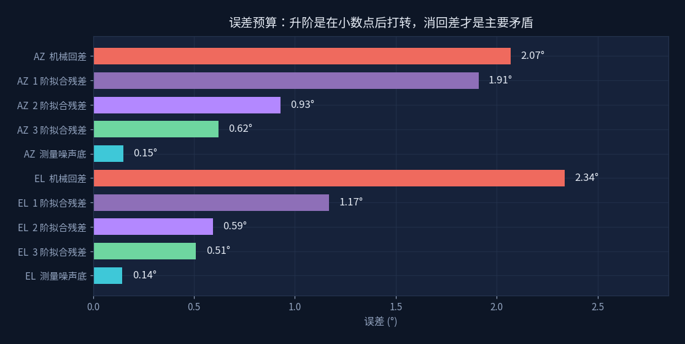
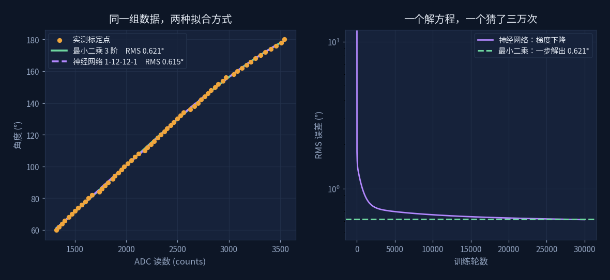
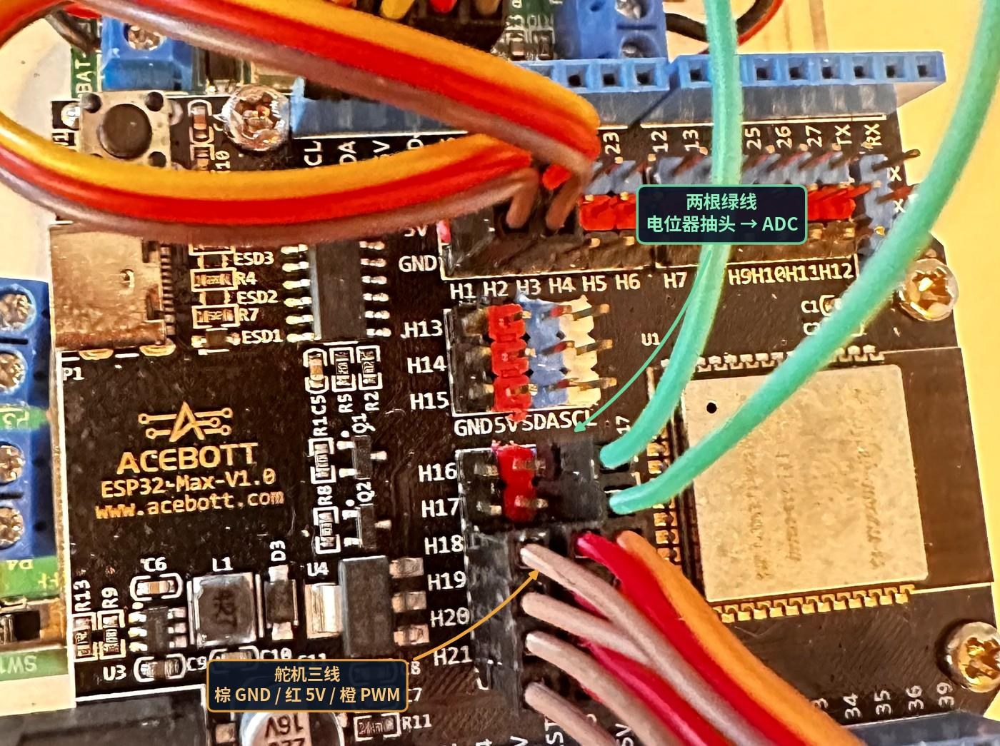

把舵机拆开，问它转到了哪里
Servo Calibration · 用最小二乘把电位器读数变成角度
原理见 → 拟合与最小二乘

为什么要拆
普通舵机是开环的：你给它一个 PWM 脉宽，它自己转过去，然后什么也不告诉你。 转到没转到、被负载顶住了没有、齿轮有没有旷量，外面一概不知道。做双轴太阳能跟踪时这不够用—— 算出来的方位角和仰角需要有人确认真的执行了。
但反馈其实一直在舵机肚子里：内部那只电位器本来就是给驱动板做闭环用的。 把中心抽头引一根线出来接到 ADC，舵机就有了角度输出。上面那张照片里的白线就是它。 代价是要拆开后盖焊一根线，好处是不用买带反馈的贵舵机。
接线

抽头只并联到 ADC，不切断舵机原有的三根线，驱动板照常工作。真正容易踩的坑是引脚选择：
| 信号 | 引脚 | 说明 |
|---|---|---|
| AZ 电位器抽头 | GPIO 32 | ADC1_CH4 |
| EL 电位器抽头 | GPIO 33 | ADC1_CH5 |
| AZ 舵机 PWM | GPIO 5 | 脉宽 500–2400 µs |
| EL 舵机 PWM | GPIO 16 | 同上 |
| OLED | GPIO 21 / 22 | I²C SDA / SCL |
抽头必须接 ADC1（GPIO 32–39）。ESP32 的 ADC2 与 WiFi 射频共用资源，
一旦开了 WiFi 就读不出数——太阳能跟踪迟早要联网，用 ADC2 等于埋雷。
另外记得 analogSetAttenuation(ADC_11db) 把量程放到约 3.3 V，
以及舵机电源与 ESP32 共地，否则 ADC 读数会整体漂移。
怎么量
让舵机以 2° 为步长走一遍全程，每停一个角度：
- 等 350 ms 让机械停稳（这个值是试出来的，短了会读到还在动的位置）
- 连续采样 64 次，间隔 2 ms，记录均值、最小、最大和标准差
- 正扫一遍，再反扫一遍——这一步是为了量出机械回差
AZ 轴 60°–180° 共 61 点，EL 轴 100°–170° 共 36 点，双向合计 194 行数据。

整个改造就是这一根线：从电位器中心抽头焊出来，引到 ADC。舵机原有的三根线一根不动，驱动板照常闭环， 我们只是在旁边"偷听"它自己的反馈信号。
数据说了什么
一、它基本是线性的，但不够线性

灵敏度 AZ 是 18.2 counts/度、EL 是 19.0 counts/度，也就是 1 个 ADC 计数约合 0.055°。 分辨率完全够用。但注意曲线和那条虚线（两端点连成的理想直线）并不重合。

把偏差单独画出来，形状是一条明显的弓：AZ 轴中段偏了 7°，EL 轴偏了 4°。 如果按两端点标定然后线性内插，中间就会差这么多。这就是需要拟合的理由。
二、几阶够用

| 拟合阶数 | AZ 轴 RMS | EL 轴 RMS |
|---|---|---|
| 1 阶（直线） | 1.910° | 1.170° |
| 2 阶 | 0.929° | 0.594° |
| 3 阶 | 0.621° | 0.510° |
| 4 阶 | 0.610° | 0.501° |
1 阶到 2 阶砍掉一半误差，2 阶到 3 阶还有三成收益，3 阶到 4 阶几乎没有变化。 模型到此为止，再加阶数只是在拟合噪声。所以选 3 阶。
三、真正的限制在哪里

这张图是整个实验最有价值的产出。64 次采样平均之后，测量噪声底只有 0.15°， 而 3 阶拟合残差是 0.62°——残差是噪声的四倍，说明剩下的误差不是量不准，是拟合不动。
再往上看：机械回差 2.07°，是拟合残差的三倍多。 同一个指令角度，正着转过来和倒着转过来，电位器读数差了约 38 个计数。这是齿轮间隙和摩擦的钱，不是数学的钱。
把多项式从 2 阶升到 3 阶，误差从 0.93° 降到 0.62°，省下 0.31°。
在控制里加一句"总是从同一个方向逼近目标角度"，一次省下 2°。
升阶是在小数点后打转，消回差才是主要矛盾。
这个判断只有做了双向扫描才能得出。如果只正扫一遍，回差会藏在拟合残差里， 你会以为是模型不够好，然后徒劳地往上加阶数。
拟合结果
用双向数据的平均值消掉回差偏置，再拟合 ADC → 角度（实际使用时是从读数反推角度， 所以自变量是 ADC，不是角度）。得到可以直接贴进固件的函数：
// AZ 轴：ADC → 角度，3 阶多项式，RMS 0.621°
float azRawToDeg(int raw) {
float r = (float)raw;
float r2 = r * r;
float r3 = r2 * r;
return -3.145869e-09f * r3 + 1.844709e-05f * r2
+ 2.311168e-02f * r + 5.814704e+00f;
}
// EL 轴：ADC → 角度，3 阶多项式，RMS 0.510°
float elRawToDeg(int raw) {
float r = (float)raw;
float r2 = r * r;
float r3 = r2 * r;
return -5.985777e-09f * r3 + 4.105006e-05f * r2
- 3.685087e-02f * r + 5.706100e+01f;
}注意系数跨了八个数量级。三次项系数是 10⁻⁹ 量级，用 float 在 ESP32 上还够，
但如果换成更高阶或更宽量程，最好把 ADC 读数先中心化再拟合，避免数值精度问题。
延伸：换成神经网络会怎样
同一组标定数据，一边用最小二乘一步解出三阶系数，一边训练一个 1-12-12-1 的小网络， 看两者能到什么水平。

结果：最小二乘 0.621°，神经网络 0.615°。 网络稍微好一点点，代价是跑了三万轮梯度下降；最小二乘解一个线性方程组就出来了， 在 ESP32 上甚至能现算。
这不是说神经网络没用，而是说明一件事：当你知道曲线该长什么样的时候， 把形状写进模型比让网络自己猜要划算得多。这条曲线是电位器的分压特性， 本来就该是低阶光滑的，三个系数就够描述。网络的价值在于你不知道形状的场合。
顺带一提，两者的误差都卡在 0.6° 上下动不了——因为它们面对的是同一个天花板， 就是上面那 2° 的机械回差在数据里留下的印记。换模型解决不了机械问题。
接线实拍与素材

绿色那两根就是从两只舵机引出的电位器抽头。这里有个容易掉进去的坑：
板上的丝印编号不是 GPIO 编号。照片里抽头插在标着 H16 / H17 的那一列接口上，
而代码里写的是 POT_AZ = 32、POT_EL = 33——扩展板有自己的一套接口编号，
中间隔着一张映射表。换一块扩展板，同样的 H16 可能就通到别的 GPIO 去了。
照着丝印号往代码里填是最常见的翻车方式，动手前先查一下手册。
请输入友情码
Enter the friendship code
线索：首页那句话是谁说的？填他的姓，拼音或英文都行。
Hint: who said the line on the homepage? His surname will do.
不对，再想想 Not quite — try again